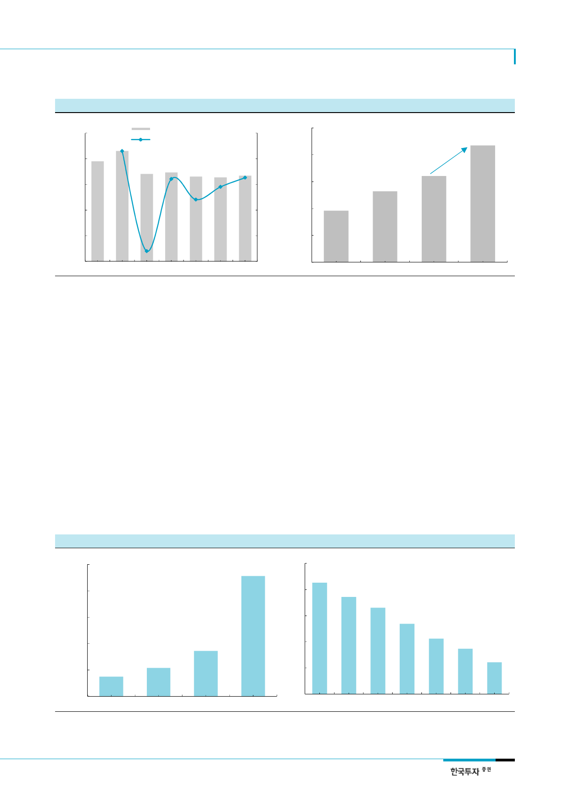

엔씨소프트(036570)
[그림 5] 온라인 게임 시장 성장 둔화 지속 예상
(십억원)
8,000
6,400
온라인게임 시장규모(좌)
YoY 성장률%(우)
ARPU가 낮은 장르의
흥행으로 시장 성장 둔화
4,800
[그림 6] 2017년 모바일 게임 시장 전년대비 35% 성장 예상
16%
(십억원)
4,000
8%
3,200
MMORPG 시장 개화에 따른
가파른 성장 예상
+35.1% YoY
0%
2,400
3,200
-8%
1,600
1,600
-16%
800
0
2011 2012 2013
자료: 게임백서, 한국투자증권
2014
2015
-24%
0
2016 2017F
2014
자료: 업계자료, 한국투자증권
2015
2016
2017F
PC MMORPG 대비 짧은 개
발 기간을 활용한 매출 성장
기대
PC MMORPG 대비 높은
ARPPU 또한 긍정적
엔씨소프트의 신작 출시 기간이 빠르게 단축될 전망이다. 개발 기간이 5년을 상회하는 PC
대작들과는 달리 모바일 게임에 소요되는 시간은 짧다. 넷마블의 ‘리니지2 레볼루션’ 개발
기간은 1.5년에 불과했으며 비교적 모바일 게임 역량이 떨어지는 엔씨소프트의 ‘리니지
M’의 개발 기간도 2년 수준이다. 실제로 상반기 기준 엔씨소프트는 퍼블리싱 작품인 ‘파
이널 블레이드’를 포함 총 4종의 모바일 라인업을 보유할 것으로 예상된다. 과거 대비 빠
른 속도의 라인업 확대이다. 향후 IP를 활용한 다양한 신작 출시를 통한 견조한 성장이 예
상되며. PC 대작 출시에 대한 높은 의존도가 축소된 다는 점 역시 긍정적이다.
PC MMORPG 대비 높은 ARPPU 또한 ‘리니지 M’에게 긍정적으로 작용할 것으로 예상한
다. 게임백서에 따르면 온라인게임 이용자들의 MARPPU는 24,000원 수준이며 ‘리니지1’
의 MARPPU는 50,000~60,000원으로 파악된다. 월정액과 일부 아이템 매출 만이 집계
되기 때문에 NTP에서 공개된 ‘리니지2 레볼루션’의 MARPPU인 146,000원 대비 매우 낮
은 수준이다. 아이템에 대한 의존도가 높은 MMORPG 장르의 특성과 모바일 게임의 주요
매출원인 확률형 아이템 판매와의 시너지가 높은 MARPPU의 원인으로 판단된다. ‘리니지
M’의 주요 이용자층은 수입 수준이 높은 장년층일 것으로 예상되기 때문에 경쟁작과의 유
사한 MARPPU 수준을 달성할 수 있을 것으로 예상한다.
[그림 7] 온라인 게임과 모바일 MMORPG의 MARPPU 비교
(원)
160,000
[그림 8] 아이템베이 게임 별 거래 현황: 리니지 이용자의 높은 소비 성향
18%
128,000
14%
96,000
11%
64,000
7%
32,000
4%
0
온라인게임
모바일게임
자료: 게임백서, 넷마블, 한국투자증권
리니지
리니지2 레볼루션
0%
리니지
R2 DK온라인 리니지2 L2R
자료: 아이템베이, 한국투자증권
아이온
B&S
5